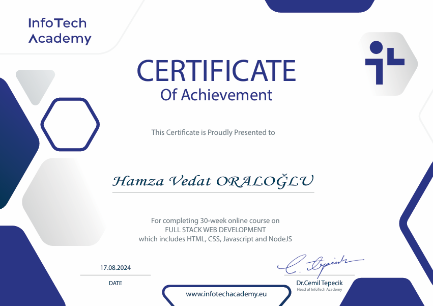

Ervaring
Op deze pagina ziet u een overzicht van mijn opleidingsachtergrond en behaalde certificaten. Door mijn studie en extra cursussen heb ik belangrijke kennis en vaardigheden opgebouwd op het gebied van softwareontwikkeling, webdesign en digitale veiligheid. Deze ervaringen vormen de basis van mijn ontwikkeling als toekomstig softwareontwikkelaar.
Opleidingen
2020 – 2021

2023 – februari 2025

2025 – heden

Certificaten
2023
The Cyber Security Analyst Course
2024
Full Stack Web Development Certificaat

2024
Certificaat Grafisch Ontwerp (Adobe Photoshop & Premiere Pro)